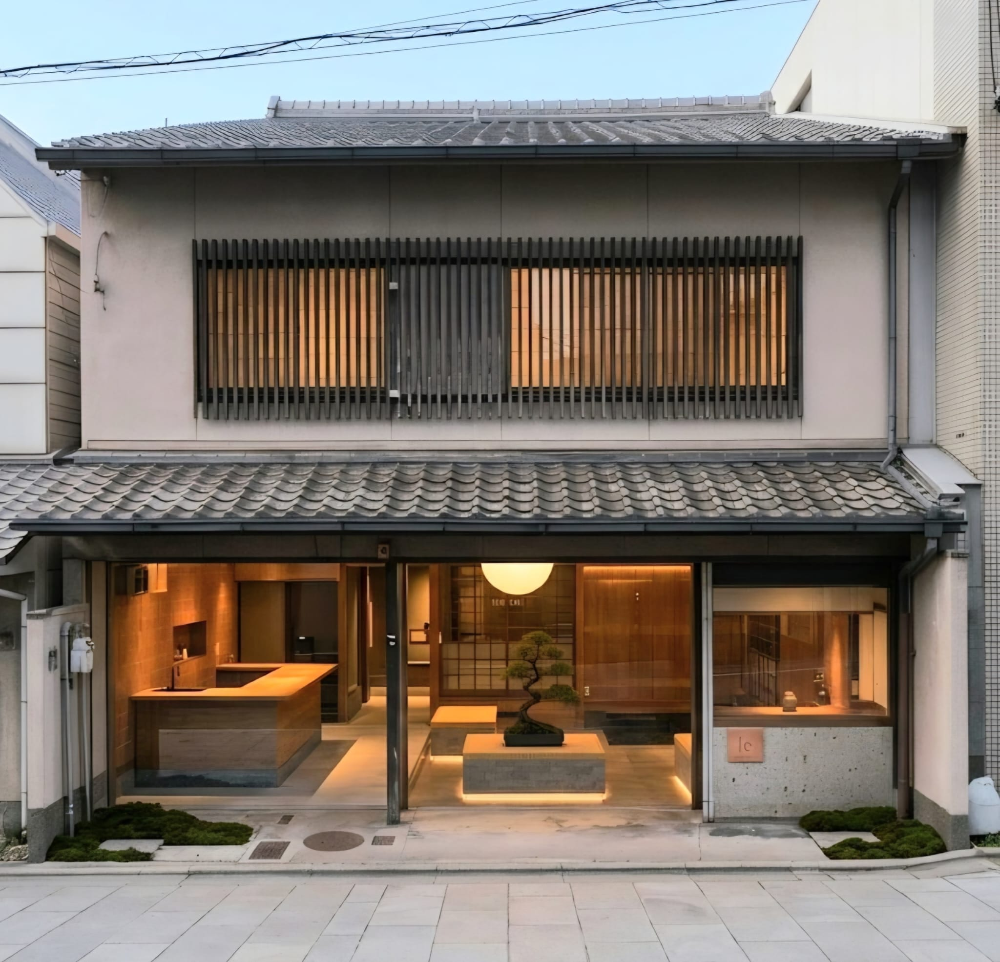
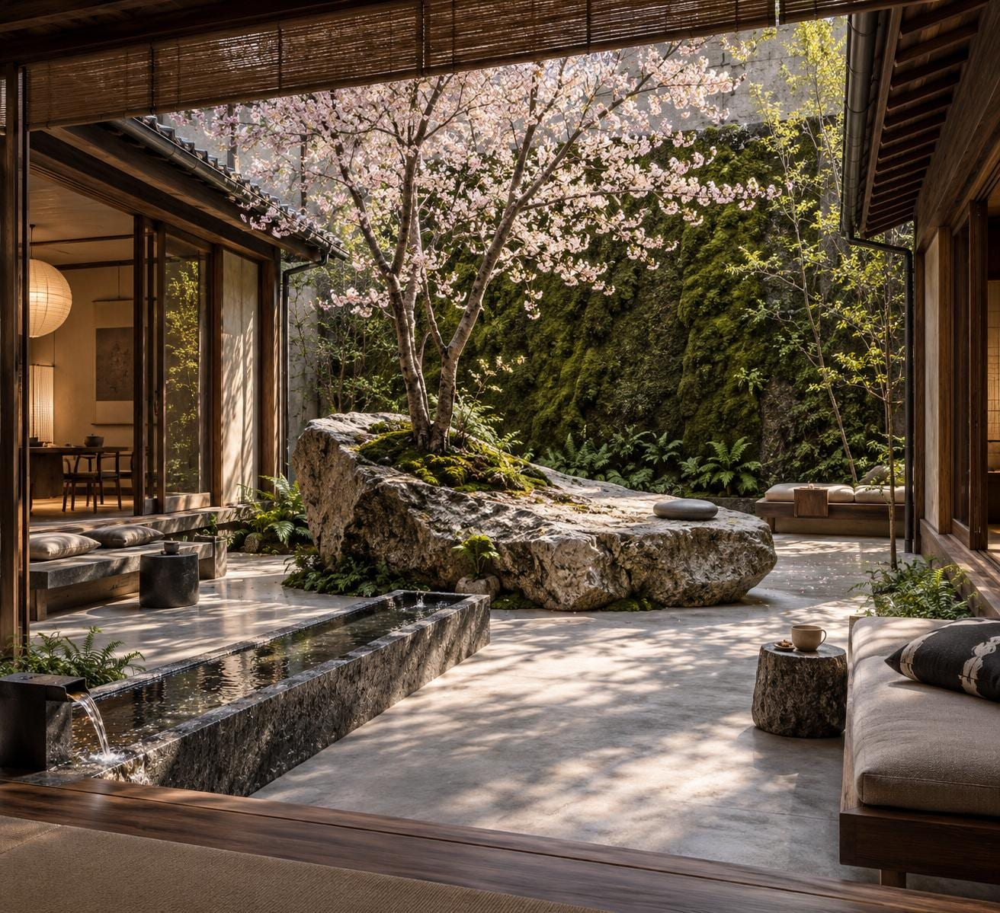
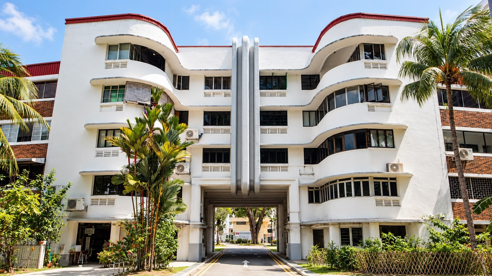
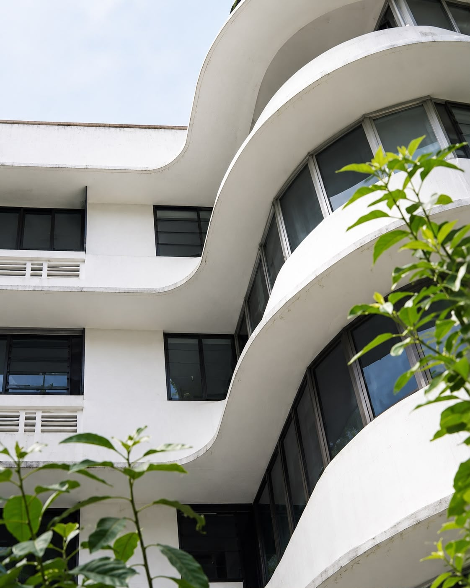

Work
Buildings tell us where to begin.
Our work starts with the property — its architecture, history, neighbourhood and possibilities — before determining what it should become.
Every project is different.
Some require a new use. Others need a clearer hospitality proposition, stronger commercial positioning or a more effective operating model.
Our work spans conservation, adaptive reuse, hospitality development, placemaking and operations.
Fushimi Inari, Kyoto
Fushimi Inari, Kyoto


Tiong Bahru
Tiong Bahru
A living heritage, renewed from within.


- Context
- Begun by the Singapore Improvement Trust in 1936, Tiong Bahru is one of Singapore's earliest planned housing estates: low-rise, Streamline Moderne, and conserved since 2003. Heritage alone does not keep a neighbourhood alive. People living in it do.
- Approach
- Since 2012, we have upgraded and retrofitted more than 80 apartments across the estate. Our touch is light and attuned to the pre-war architecture. Within it, we add modern layouts, amenities and furnishings, so these homes suit the way people live today.
- Enabling Modern Living
- The renovation is the means, not the end. Apartments that had grown tired became homes for professionals, families and co-living residents, people who choose Tiong Bahru for daily life rather than a passing visit. Flexible long-term and co-living formats open the estate to those who might otherwise never call it home.
- A Mix That Enriches
- Our residents arrive from around the world and from across Singapore. They live alongside long-time locals, sharing the market, the morning kopi and the low-rise streets. Those daily encounters build familiarity and belonging, and give the estate a rare blend of generations, cultures and ways of life.
- Place
- Residents join a neighbourhood that holds old and new close together. Qi Tian Gong, the Monkey God Temple, dates to 1920. Tiong Bahru Market has been a meeting place since 1951. Galleries, cafés and bakeries now sit alongside them, sustained in part by the residents who live nearby.
- Our Part
- Tiong Bahru's revival is a shared story, shaped by conservation policy, long-standing residents, hawkers, owners and independent businesses. Our contribution is to keep more than 80 homes lived in, cared for and open to new neighbours, so the estate keeps thriving as a place to live and not just a place to admire.
- What It Taught Us
- A building endures when people want to live in it. Understand the place, make the spaces work for contemporary life, and the neighbourhood does the rest.
Heritage, kept alive by the people who call it home.Discuss the next chapter of your property